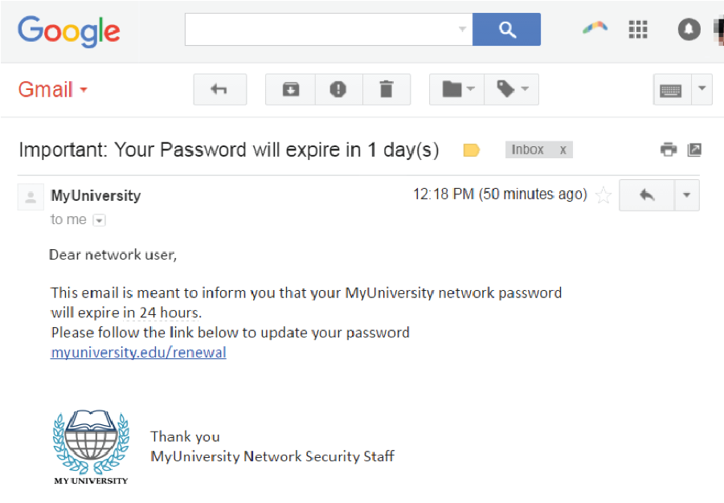

Why do we need to be aware?
Phishing tricks the user into unwittingly handing over their passwords to the scammer, often through professional-looking emails purporting to be from trustworthy businesses. This is used to steal personal information, like credit card and social security numbers and login credentials. The attacker tricks a victim into opening an email, instant message, or text message. The recipient is then tricked into clicking a malicious link. An attack can have devastating results. For individuals, this includes unauthorized purchases, the stealing of funds, or identify theft.
Email Phishing Cases
According to the Anti-Phishing Working Group, nearly 100,000 attempts of phishing are reported each month worldwide.
Email phishing is a numbers game. An attacker sending out thousands of fraudulent messages can net significant information and sums of money, even if only a small percentage of recipients fall for the scam. Attackers design phishing messages to mimic actual emails from a spoofed organization. Using the same phrasing, typefaces, logos, and signatures makes the messages appear legitimate. Lastly, links inside messages resemble their legitimate counterparts, but typically have a misspelled domain name or extra subdomains. Phishers have sometimes used images instead of text to make it harder for anti-phishing filters to detect the text commonly used in phishing emails.
The availability of phishing kits makes it easy for cyber criminals, even those with minimal technical skills, to launch phishing campaigns. A phishing kit bundles phishing website resources and tools that need only be installed on a server. These resources include pre-generated HTML pages and emails for popular banks and online commerce sites, scripts for processing user input, email and proxy server lists, and even hosting services for phishing sites. Once installed, all the attacker needs to do is send out emails to potential victims. Phishing kits as well as mailing lists are available on the dark web. A couple of sites, Phishtank and OpenPhish, keep crowd-sourced lists of known phishing kits.
Technical Strategies:
-
One of the simplest techniques for obscuring the actual destination of a hyperlink is to use a legitimate URL within an anchor element but have its href attribute point to a malicious site. Thus clicking on a legitimate-looking URL actually sends the user to a phishing site. This deception can be detected because web browsers display the actual destination of a hyperlink when a user moves the mouse pointer over the link; this information is typically displayed in the web browser’s status bar.
-
Use of JPEG images: Electronic mail rendered in HTML format is becoming more prevalent. Phishers are taking advantage of this by constructing phishing emails that contain a single image in JPEG format. When displayed, this image appears to be legitimate email from an online bank or merchant site. The image often includes official logos and text to add to the deception. However, when users click on this image, they are directed to a phishing site. Phishing emails using this technique can often be detected by observing the actual destination URL when mousing over the image.
-
Use of alternate encoding schemes: Hostnames and IP addresses can be represented in alternate formats that are less likely to be recognizable to most people.
Applying a sense of urgency and pressure causes the user to be less diligent and more prone to error. Criminals rely on deception and creating a sense of urgency to achieve success with their phishing campaigns. During a crisis, people are on edge. They want information and are looking for direction from their employers, the government, and other relevant authorities. An email that appears to be from one of these entities and promises new information or instructs recipients to complete a task quickly will likely receive less scrutiny than prior to the crisis. An impulsive click later, and the victim's device is infected or account is compromised.
References:
https://www.comparitech.com/blog/information-security/phone-spam-statistics/
https://www.comparitech.com/blog/information-security/number-spoofing-scams/
https://www.makeuseof.com/how-do-spam-callers-spoof-phone-numbers-to-appear-local/
https://www.kaspersky.com/resource-center/preemptive-safety/phone-number-spoofing
https://www.businessinsider.com/phone-number-spoofing-2016-2